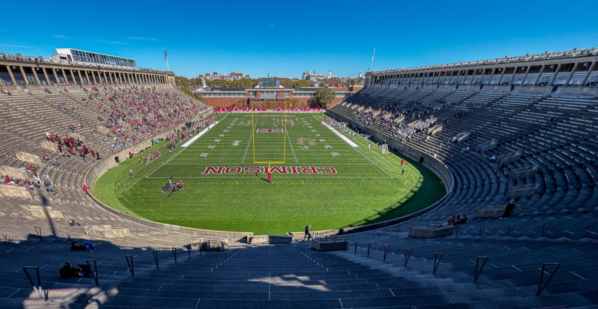
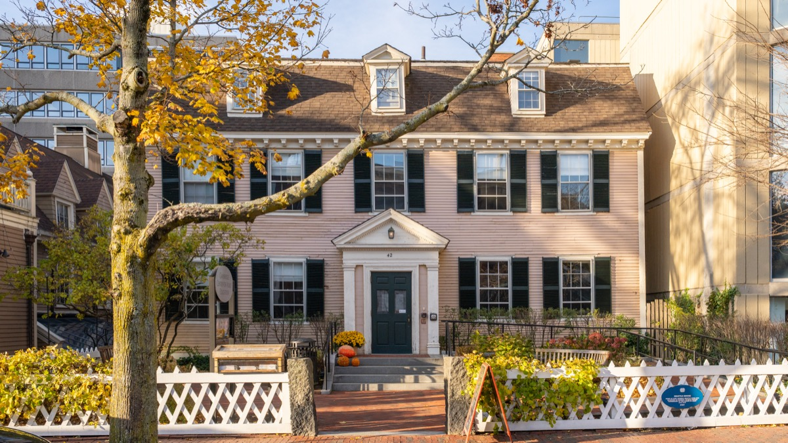
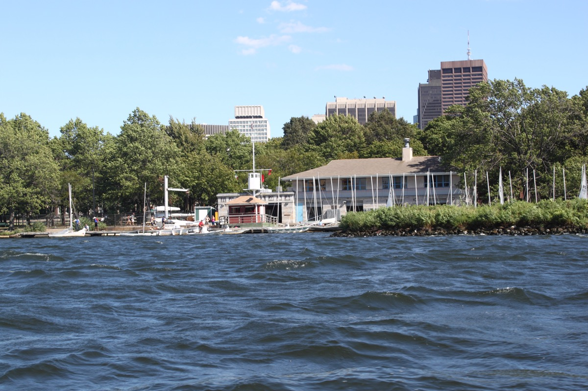

Every channel we have seen work for people who moved to Boston without a built-in crowd, with groups, addresses and T stops, plus a neighborhood table and a first-90-days plan. Still unpacking? Start with just moved to Boston.
The short answer
The 10 best ways to meet people in Boston
01
Why making friends in Boston is hard at first
Boston is transient: 35-plus colleges plus hospitals and biotech mean many people leave after two years, so aim for a wider circle than you think you need. It is reserved: nobody chats on the T, and friendliness is shown by showing up. And winter is long, so build a base by December and plan indoor anchors for the dark months.
02
Run clubs and rec sports leagues
Run clubs are free, weekly and built for strangers. Leagues put you on a team for two months.
November Project

Free stadium-stair workouts with a "newbie" welcome every week and everybody's name shouted. Show up three Wednesdays in a row and someone will invite you to breakfast.
Heartbreak Hill Running Company runs
Free evening runs with split pace groups, nobody dropped, and a bar at the end. Skews 25 to 40 and heavy on recent arrivals.
Tracksmith Trackhouse runs
Group runs along the Charles for slightly more serious runners. Pick this if you want training partners rather than a party.
Slow AF Run Club and no-drop groups
Slow AF has a Boston chapter, and JP, Somerville and Southie groups run at conversational pace and welcome walkers. The whole point is talking.
Social Boston Sports and Volo leagues
Co-ed kickball, softball, volleyball, dodgeball, bocce, cornhole, flag football and soccer. Sign up as a free agent and your whole team is also new; games end at a sponsor bar.
03
Trivia, board game nights and climbing gyms
Weeknight channels that give you something to do with your hands and a reason to talk.
Weekly pub trivia, same bar every week
Tell the host you are alone and they will put you on a team. Go to the same bar every week and by week four it is your team. Nights by neighborhood in our trivia guide.
Board game night at Knight Moves
A board game café with over a thousand games where staff match solo visitors to tables that need a player. The Cambridge location on Mass Ave runs game nights too.
A climbing gym membership
Bouldering is 30 seconds of climbing and five minutes of talking about the route. Go at the same time twice a week and you have a crew within a month.
04
Volunteering: the most reliable channel nobody uses
The same 10 people every week, working on something together, with nothing to buy.
Community Servings kitchen shifts
Chop vegetables for medically tailored meals alongside 15 to 20 people for three hours. Weekday evening and Saturday shifts draw individuals; book a recurring slot.
Rosie's Place
A sanctuary for poor and homeless women. Lunch and dinner service shifts with a regular volunteer pool that mixes ages and neighborhoods.
Cradles to Crayons
Sort donated clothes and school supplies in two-hour shifts with a five-minute briefing and a room full of other people in their 20s. The easiest first volunteering try.
05
Classes and language exchanges
Cambridge Center for Adult Education

Cooking, pottery, languages, writing, woodworking, wine, since 1938. Pick a multi-week hands-on course, not a one-night workshop. The Boston Center for Adult Education in the South End is the equivalent across the river.
Language exchanges
Weekly Spanish, French, Portuguese, Mandarin and Japanese nights, mostly via Meetup or university groups. You do not need to be fluent, and half the room is also new.
Cooking classes and studio memberships
A pottery membership means you see the same people at the wheel at odd hours. Cooking classes are easy to attend alone.
06
Meetup, Bumble BFF and coworking
Meetup groups
Pick groups with a fixed weekly or monthly activity: a Blue Hills hike, a Thursday game night, a monthly photo walk. A hike with 12 beats a bar with 60.
Bumble BFF
A real user base here, mostly women in their 20s and 30s who moved for work or grad school. Use it to find an activity partner, not a friend.
Coworking and work-from-home cafés
Workbar and CIC run member socials. Cheaper: work from one café on the same two mornings every week; regulars notice regulars. See the best cafés to work from.
07
Hobby communities: sailing, rowing, skiing
Cheap, structured, and dependent on members teaching each other.
Community Boating on the Charles

Unlimited sailing for a season plus free lessons taught by other members. The dock on a summer evening is a standing social scene, and one of our best views.
Learn-to-row programs
A boat with seven strangers at 6am, moving in unison. Sessions run a few weeks and feed into recreational crews that row all season.
Boston Ski & Sports Club
Ski bus trips to New Hampshire and Vermont, plus its own leagues and travel. The winter answer to "what do I do from January to March." A membership pays for itself in two trips.
Hiking and the outdoors
The AMC Boston chapter runs beginner hikes most weekends, many car-free. The Blue Hills are 40 minutes from Downtown, and a small-group hike is four hours of conversation.
08
Church, temple and mosque communities
Most large congregations run young-adult groups with weekly dinners and service projects.
- Trinity Church, Copley Square (Episcopal, 206 Clarendon St, Copley on the Green Line).
- The Paulist Center (Catholic) and Park Street Church (evangelical), both at Park Street station.
- Temple Israel (Reform, Longwood on the Green E) and the Vilna Shul on Beacon Hill for young-adult Jewish programming.
- Islamic Society of Boston Cultural Center (100 Malcolm X Blvd, Roxbury Crossing on the Orange Line), the largest mosque in New England.
- Not religious? Arlington Street Church and First Church in Boston (Unitarian Universalist) and the Boston Ethical Society welcome the unsure.
09
Where you live matters: neighborhood by neighborhood
Your neighborhood decides whether the above is a ten-minute walk or a trip you stop making in November.
| Neighborhood | Who lives there | Best channels nearby |
|---|---|---|
| Allston / Brighton | Post-grads, musicians, the cheapest roommate situations | November Project, Silhouette trivia, Cradles to Crayons, Brighton Music Hall |
| Somerville (Davis, Union) | Late 20s and 30s, settled young people | Burren trivia, BKB climbing, Mudflat pottery, Union Square bars |
| Cambridge (Central, Inman, Porter) | Grad students, researchers, many internationals | Language exchanges, CCAE classes, Central Rock, Harvard Square |
| South End | Late 20s to 40s, professionals, dog owners | Heartbreak Hill runs, Rosie's Place, BCAE, Wally's jazz |
| South Boston | Post-college professionals in large numbers | Rec leagues, Broadway bars, the beach in summer |
| Fenway / Kenmore | Students and young professionals | Esplanade runs, Fenway, Lansdowne Street |
| Jamaica Plain | 30s, creative and community-minded | Community Servings, the Arboretum, Centre Street |
| Back Bay / Beacon Hill | Older, wealthier, fewer roommates | Tracksmith runs, Trident trivia, Community Boating, churches |
| Seaport / Downtown | Finance and consulting, high turnover | ICA Thursdays, Row 34; expect to travel for the rest |
Full profiles in our Boston neighborhoods guide, including Somerville, Allston-Brighton and the South End.
10
Your first 90 days: a plan
A casual friend takes about 50 shared hours, a close one about 200. Weekly beats one-off.
| When | Do this | Why |
|---|---|---|
| Week 1 | Pick an anchor weeknight activity (trivia, run club, climbing gym) and go once | Something on the calendar before the boxes are unpacked |
| Week 2 | Register as a free agent for the next Social Boston Sports or Volo season | Locks in 6 to 8 weeks of the same people |
| Weeks 2 to 4 | Go to the anchor every week. Say yes to the after-thing | The bar or breakfast after is where friends are made |
| Week 4 | Book a recurring volunteer shift or a multi-week class | Your winter anchor |
| Weeks 5 to 8 | Invite one person to one thing outside the activity: coffee, a show, the Harborwalk | The first move has to be yours |
| Week 8 | Host something tiny: three people, a board game, North End takeout | People who have been in your kitchen come back |
| Weeks 9 to 12 | Keep the two anchors; drop what is not working; try one new thing | By now you know what fits |
| Day 90 | Count. Three people you could text on a Tuesday means it worked. If not, change channels | Channels matter more than trying harder |
- Recurrence beats novelty. Choose the option you will still be at in week six.
- Say yes to the after-thing. The diner after the run is where the friends are made.
- Treat winter as the season for depth: the February friend is the one still around in five years.
- Give it a year. It clicks the second September, when you are the one who knows the good trivia.
Meanwhile, see things to do alone in Boston, the best bars to meet people, and things to do with friends once you have them.
FAQ
How to make friends in Boston: common questions
Is it hard to make friends in Boston?
At first, yes. The city is reserved, transient and indoors all winter. But it is small and full of weekly activities. Show up to the same thing weekly for three months and it gets easier.
What is the best way to meet people in Boston in your 20s?
Recurring activities where strangers are expected: November Project, Heartbreak Hill runs, Social Boston Sports and Volo leagues, weekly pub trivia, climbing gyms and volunteering shifts.
Which Boston neighborhoods are best for meeting people?
Allston, Brighton, Somerville (Davis and Union Square), Cambridge (Central and Inman), the South End and Southie. Most roommates, run clubs, trivia nights and casual bars, all walkable.
How long does it take to make friends after moving to Boston?
Most people find months one to three lonely and months four to six fine. Casual friendship takes about 50 shared hours, close friendship about 200, so weekly activities beat one-off events.
How do I make friends in Boston in the winter?
Keep it indoors and weekly: climbing gyms, board games at Knight Moves, trivia, adult ed classes, Boston Ski and Sports Club trips, indoor rec leagues and volunteering shifts.